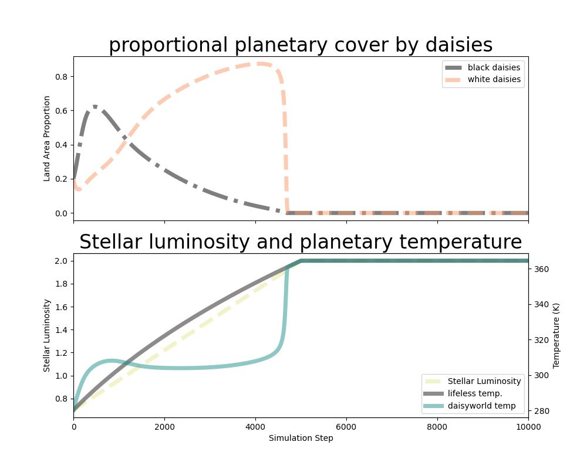

Life Detection
The parable of daisyworld

Control without a central controller. Prior to the publication of daisyworld by Watson and Lovelock in 1983, it wasn't clear how planetary conditions could be regulated by decentralized evolutionary or ecological pressures. We'll use the daisyworld model as a starting point to figure out how we might detect the plausibility of life from planetary measurements.